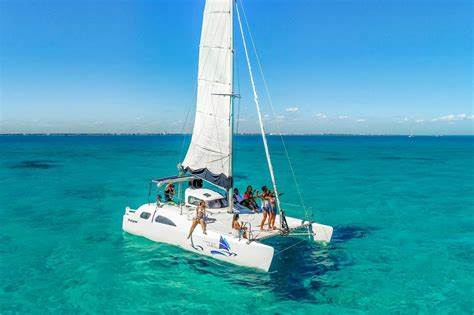

El Caribe se vive de cerca.
Descubre el mar, la cultura y los lugares que hacen inolvidable cada viaje. Nosotros te ayudamos a elegir y reservar la experiencia ideal.
Experiencias para cada forma de descubrir el Caribe.
Un día navegando hacia Isla Mujeres, un recorrido por la historia maya o una escapada junto al mar. Cuéntanos tus fechas y te ayudamos a encontrar la mejor opción.
Elige tu próximo recuerdo
Tarifas sujetas a fecha, disponibilidad, edad y lugar de salida. Confirma el total al reservar.

ISLA MUJERES · PLAN FAMILIARPlus Experiencia Familiar
Un día para compartir Isla Mujeres en catamarán: mar turquesa, snorkel si el clima lo permite, tiempo libre, buffet, bebidas y acceso a club de playa.
- Duración aproximada de 6 horas y media
- Salidas desde Cancún; consulta horarios disponibles
- Sin transporte: adultos (12 años en adelante) $850 MXN y menores (5 a 11 años) $450 MXN
- Con transporte: adultos $1,100 MXN y menores $700 MXN
- Infantes de 0 a 4 años gratis, también con transporte
Tu viaje empieza con un mensaje.
Elige tu experiencia
Dinos qué tour te interesa, fecha y cuántas personas viajan.
Confirma los detalles
Te compartimos disponibilidad, tarifa final, punto de encuentro e inclusiones.
Disfruta el día
Recibe tu confirmación y paga el día de la actividad según las condiciones de tu reserva.
La experiencia, en sus palabras.
Comentarios y fotos compartidos por quienes viajaron con Life’s Tours. Las reseñas se revisan antes de publicarse.
Cargando reseñas…
Cuéntanos cómo te fue
Tu reseña y fotos aparecerán aquí después de revisarlas. Comparte tu experiencia sin incluir teléfonos ni datos personales.
Lo que conviene saber
¿Qué edades cuentan como menor o adulto?
En Isla Mujeres Familiar, los infantes de 0 a 4 años van gratis, los menores son de 5 a 11 años y la tarifa de adulto aplica desde los 12 años. El tour Solo Adultos es para personas de 18 años en adelante.
¿Dónde sale el catamarán a Isla Mujeres?
Desde Cancún. El punto de encuentro es en la zona del Hotel Imperial Las Perlas; te enviamos la ubicación e indicaciones exactas al confirmar.
¿El transporte está incluido?
En el tour familiar es opcional: con transporte cuesta $1,100 MXN por adulto y $700 MXN por menor de 5 a 11 años. Los infantes de 0 a 4 años van gratis. Confirma tu zona de recogida al reservar.
¿Qué pasa si el clima afecta el snorkel?
La actividad de snorkel depende de las condiciones del mar y las indicaciones del operador para la seguridad de los pasajeros.
¿Puedo pagar el día del tour?
En las experiencias elegibles, sí. Confirma por WhatsApp la forma de pago y las condiciones particulares de tu recorrido.
Hay un Caribe esperando por ti.
Escríbenos con tu fecha, número de viajeros y experiencia favorita. Te responderemos con opciones y precio final.